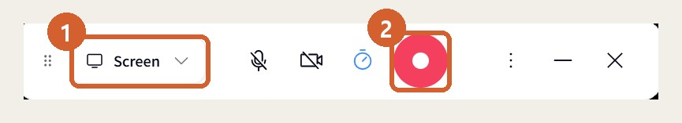
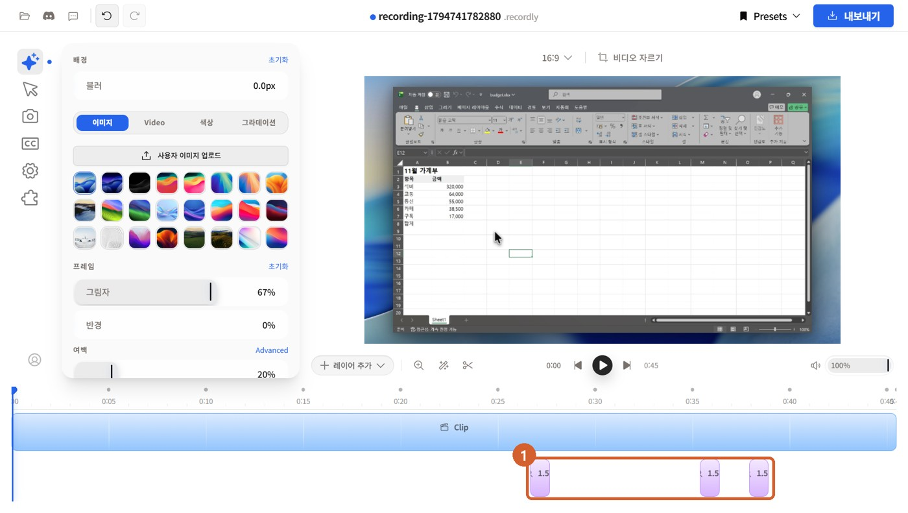
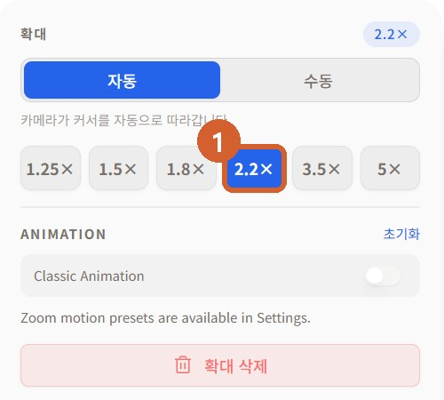
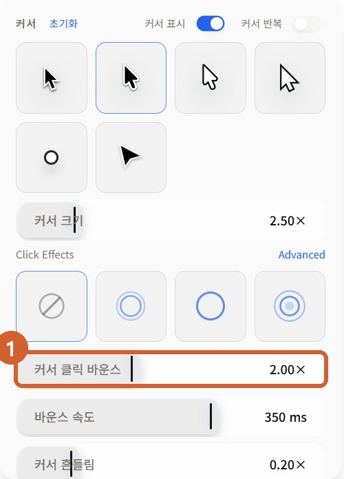
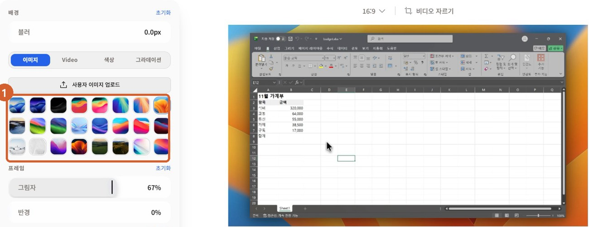
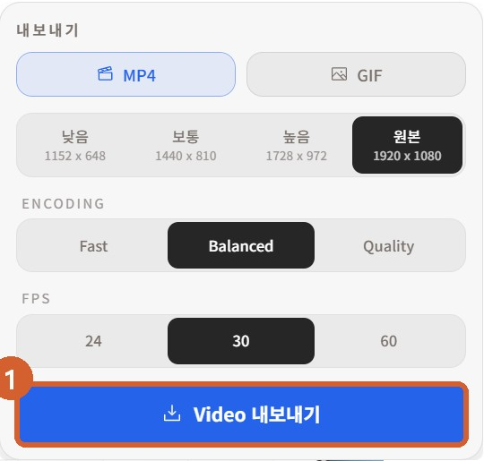

화면을 녹화하면 마우스로 누른 자리를 기억해 두었다가, 그 자리로 화면을 스르륵 당겨 주는 무료 녹화 앱이에요. 커서도 크고 매끈하게 다시 그려 주고(누를 때마다 톡 튀어요), 배경·그림자를 입혀 바로 올릴 수 있는 MP4로 뽑아 줘요. 윈도·맥·리눅스에서 되고, 깃허브 공개 오픈소스(AGPL-3.0)예요.
github.com/webadderallorg/Recordly/releases 에서 윈도는 Recordly-windows-x64.exe, 맥은 Recordly-arm64.dmg(애플 칩)·Recordly-x64.dmg(인텔)를 받아 실행해요. 윈도에서 'Windows의 PC 보호' 창이 뜨면 '추가 정보 → 실행'을 눌러요(서명 안 된 설치 파일이라 뜨는 창이에요).
Recordly를 켜면 화면 아래에 작은 막대가 떠요. 왼쪽 칸(1)에서 화면 전체나 녹화할 창(예: 엑셀)을 고르고, 빨간 버튼(2)을 누르면 잠깐 숫자를 센 뒤 녹화가 시작돼요. 평소처럼 클릭하며 설명하면 되고, 끝나면 '중지'를 눌러요. 마이크·웹캠은 막대의 버튼으로 켜요.

중지하면 편집기가 열려요. 아래 줄(1)의 보라색 칸이 누른 자리마다 자동으로 생긴 확대예요. 칸을 누르면 확대 정도를 고를 수 있고(1.25배~5배), 칸을 끌어 옮기거나 '확대 삭제'로 지울 수 있어요. 원하는 곳에 확대를 직접 더할 수도 있어요(수동 확대).


왼쪽 화살표 버튼을 누르면 커서 설정이 나와요. 커서 모양·크기, 부드럽게 움직이기, 누를 때 튀는 정도(1, 커서 클릭 바운스)를 바꿔요. 녹화할 때 진짜 커서는 빼고, 이 커서를 다시 그려 넣어요.

맨 위 반짝이 버튼에서 배경 그림(1)·단색·그라데이션, 그림자·둥근 모서리·여백을 골라요. 오른쪽 미리보기에 바로 보여요. 위의 '비디오 자르기'로 녹화 화면 가장자리를 잘라 낼 수도 있어요.

오른쪽 위 '내보내기' → MP4(또는 GIF)·화질·초당 장면 수를 고르고 'Video 내보내기'(1). 다 그려지면 저장 위치를 묻는 창이 떠요. 미리보기 위의 비율(16:9)을 눌러 다른 비율로 바꿀 수 있어요.

윈도·맥·리눅스
https://github.com/webadderallorg/Recordly/releases
회사 영상·한국어 화면이 필요할 때
https://github.com/getopenscreen/openscreen/releases
도움이 되셨다면
@ai.antenna.kr
에서 바로 쓰는 AI 활용법을 계속 올립니다.